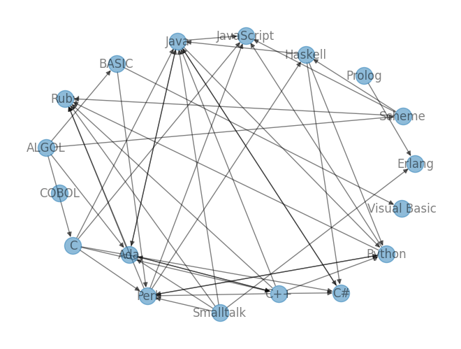

import json
import requests
import networkx as nx
%matplotlib inline
# from https://madnight.github.io/githut/#/pull_requests/2024/1
POPULAR_LANGUAGES = [
# Top 10
'Python', 'Java', 'Go', 'JavaScript', 'C++',
#'TypeScript',
'PHP', 'Ruby', 'C', 'C#',
# Top 20
'Nix', 'Shell', 'Rust', 'Scala', 'Kotlin',
'Swift', 'Dart', 'Groovy', 'Perl', 'Lua',
# Top 30
'DM', 'SystemVerilog', 'Objective-C', 'Elixir', 'CodeQL',
'OCaml', 'Haskell', 'PowerShell', 'Erlang', 'Emacs Lisp',
# Top 33
'Julia', 'Clojure', 'R'
]
NOTABLE_LANGUAGES = [
# in 1950s
'FORTRAN', 'LISP', 'ALGOL', 'COBOL',
# in 1960s
'Simula', 'Speakeasy', 'BASIC',
# in 1970s
'Pascal', 'C', 'Smalltalk', 'Prolog', 'ML', 'Scheme', 'SQL',
# in 1980s
'C++', 'Ada', 'Perl',
# in 1990s
'Haskell', 'Python', 'Visual Basic', 'Lua', 'R',
'Ruby', 'Java', 'JavaScript', 'PHP', 'OCaml',
# in 2000s
'C#', 'Go',
# in 2010s
'Dart', 'Kotlin', 'Julia', 'TypeScript', 'Swift', 'Rust'
]
CHOSEN_LANGUAGES = [
# in 1950s
'FORTRAN', 'LISP', 'ALGOL', 'COBOL',
# in 1960s
'BASIC', 'PL/I'
# in 1970s
'Pascal', 'C', 'Scheme', 'Smalltalk', 'Prolog',
# in 1980s
'C++', 'Perl', 'Ada', 'Erlang',
# in 1990s
'Haskell', 'Python', 'Visual Basic',
'Java', 'JavaScript', 'Ruby',
# in 2000s
'C#', #'Go',
]
try:
res = requests.get('https://exploring-data.com/gexf/plin_forceatlas2.json')
d = json.loads(res.text)
except:
import os
if not os.path.exists('plin_forceatlas2.json'):
# Exploring Dataのサイトで使用されているデータを取得
# URL: https://exploring-data.com/vis/programming-languages-influence-network/
!wget -P data https://exploring-data.com/gexf/plin_forceatlas2.json
with open('data/plin_forceatlas2.json') as f:
d = json.load(f)
G = nx.DiGraph()
id2name = {}
for node in d['nodes']:
if 'paradigms' in node['attributes']:
id = node['id']
node_name = node['label']
id2name[id] = node_name
paradigms = node['attributes']['paradigms'].split('|')
G.add_node(node_name, paradigm=paradigms)
edges = []
for edge in d['edges']:
if edge['sourceID'] in id2name and edge['targetID'] in id2name:
source = id2name[edge['sourceID']]
target = id2name[edge['targetID']]
# source が target に影響を与えた（i.e. targetはsourceに影響を受けた言語）
edges.append((source, target))
G.add_edges_from(edges)
G_sub = G.subgraph(POPULAR_LANGUAGES[:8])
G_sub = G.subgraph(CHOSEN_LANGUAGES)
pos = nx.spring_layout(G_sub, k=8.0)
nx.draw(G_sub, pos, with_labels=True, alpha=0.5)

h, a = nx.hits(G_sub, max_iter=1000)
sorted(h.items(), key=lambda x: -x[1])[:30]
[('C++', 0.1644787726763753),
('Smalltalk', 0.12309984399042047),
('C', 0.12170060112362677),
('Java', 0.09556338696596214),
('Perl', 0.08954569159865634),
('Python', 0.08626168437063046),
('Haskell', 0.08090665231588313),
('Ada', 0.07603741375196246),
('Scheme', 0.06619870952917233),
('C#', 0.03246883293620314),
('BASIC', 0.030144263410876747),
('ALGOL', 0.026535256636505546),
('Prolog', 0.007058890693725168),
('Ruby', -0.0),
('COBOL', -0.0),
('Erlang', -0.0),
('JavaScript', -0.0),
('Visual Basic', -0.0)]
sorted(a.items(), key=lambda x: -x[1])[:30]
[('Ruby', 0.1482376230526495),
('Java', 0.14654137291462901),
('Perl', 0.12867152201072046),
('C#', 0.1132423131511447),
('JavaScript', 0.11241515502583412),
('Python', 0.10537178261373922),
('Ada', 0.10027636323858818),
('C++', 0.04840016991108936),
('Haskell', 0.03812142790060111),
('Erlang', 0.03185884554413392),
('Visual Basic', 0.007378386355547365),
('Scheme', 0.006495012760441033),
('BASIC', 0.006495012760441033),
('C', 0.006495012760441033),
('ALGOL', -0.0),
('COBOL', -0.0),
('Smalltalk', -0.0),
('Prolog', -0.0)]
reversed_G = G_sub.reverse()
pr = nx.pagerank(reversed_G, alpha=0.75)
sorted(pr.items(), key=lambda x: -x[1])[:20]
[('ALGOL', 0.1824916985242153),
('C', 0.0815819440618317),
('C++', 0.07370004280500529),
('Smalltalk', 0.0692299550814309),
('Ada', 0.06532062673188216),
('Perl', 0.0610225490605169),
('Java', 0.057976201421171554),
('BASIC', 0.05649892940034689),
('Scheme', 0.05283857385804718),
('Haskell', 0.048917059981207725),
('Python', 0.043647951026363256),
('Prolog', 0.03720009187434329),
('C#', 0.034301463015014674),
('Ruby', 0.027054582631724628),
('COBOL', 0.027054582631724628),
('Erlang', 0.027054582631724628),
('JavaScript', 0.027054582631724628),
('Visual Basic', 0.027054582631724628)]
from gensim.models import Word2Vec
import numpy as np
def cosine_sim(v1, v2):
return np.dot(v1, v2) / (np.linalg.norm(v1) * np.linalg.norm(v2))
import random
# nx.generate_random_paths(G, sample_size=10, path_length=5) と同じ
def generate_random_paths(G, sample_size=10, path_length=5):
_G = G.to_undirected()
nodes = list(_G.nodes)
paths = []
for i in range(sample_size):
node = random.choice(nodes)
path = [node]
for j in range(path_length):
neighbors = _G.neighbors(node)
neighbor = random.choice(list(neighbors))
path.append(neighbor)
node = neighbor
else:
paths.append(path)
return paths
G.remove_nodes_from(list(nx.isolates(G)))
#paths = generate_random_paths(G_sub)
paths = list(nx.generate_random_paths(G.to_undirected(), sample_size=100000, path_length=10))
# 学習
model = Word2Vec(paths, vector_size=512, window=5, min_count=30, epochs=5)
cosine_sim(model.wv['Python'], model.wv['Ruby'])
0.31284717
cosine_sim(model.wv['Smalltalk'], model.wv['Objective-C'])
0.15120898
cosine_sim(model.wv['Java'], model.wv['C#'])
0.20247811
cosine_sim(model.wv['Lisp'], model.wv['Scheme'])
0.13757682
cosine_sim(model.wv['Python'], model.wv['R'])
-0.10854513
results = model.wv.most_similar(positive=["JavaScript"], topn=100) #ここで元の単語を指定する
for result in results:
if result[0] in POPULAR_LANGUAGES:
print(result)
('Groovy', 0.2062573879957199)
('Perl', 0.1861027330160141)
('C++', 0.17691650986671448)
('Lua', 0.1360611915588379)
('Ruby', 0.12705259025096893)
('Objective-C', 0.11757013201713562)
('Python', 0.09686344116926193)
('PHP', 0.07677168399095535)
('R', 0.07467618584632874)
('Go', 0.0630873590707779)
('C', 0.03195572271943092)
('Haskell', 0.0289512537419796)
('Emacs Lisp', 0.025776470080018044)